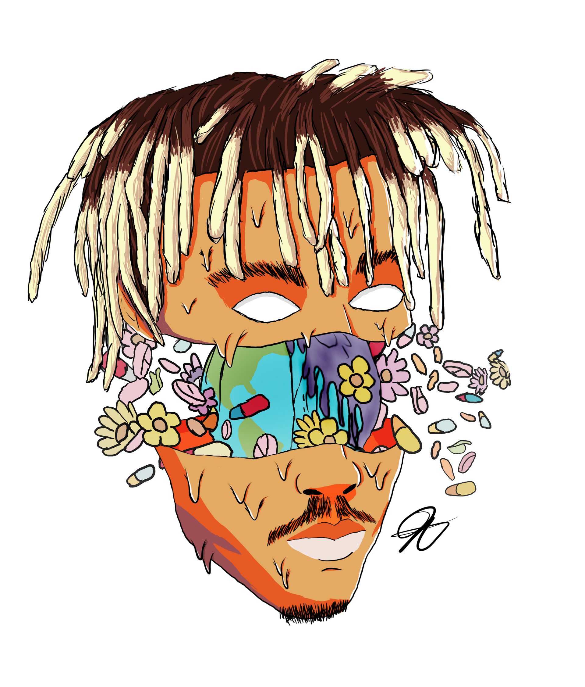
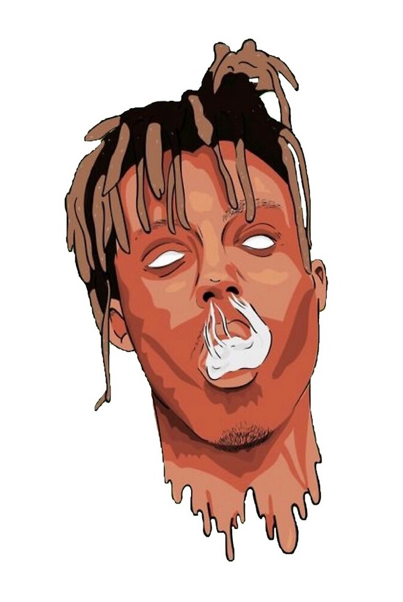

 Jarad Higgins (born December 2, 1998), known professionally as Juice WRLD, is an American rapper, singer, and songwriter from Calumet Park, Illinois. He is primarily known for his breakout hits, "All Girls Are the Same" and "Lucid Dreams". His music has been described as "emo-leaning and genre-bending".
Jarad Higgins was born on December 2, 1998 in Chicago and grew up in Calumet Park, one of its suburbs. He later moved to Homewood, Illinois and attended Homewood-Flossmoor High School. Higgins' parents split up when he was young and his father left his mother to raise him as a single mother alongside multiple siblings.
Involved in music his entire life, he first learned piano, followed by guitar and drums. Higgins began to take rapping seriously in his sophomore year of high school.
Higgins began to develop himself as an artist in his freshman year of high school. His first track, "Forever", was released on Soundcloud in 2015 under the name JuiceTheKidd. His first track produced by his current producer Nick Mira, "Too Much Cash", was released in 2017. While releasing projects and songs on SoundCloud, Higgins worked in a factory to attempt to create income for himself, though was fired within two weeks after finding himself dissatisfied with the job. After joining the internet collective, Internet Money, Higgins released his debut full-length EP on 15 June 2017 titled 9 9 9 with the song "Lucid Dreams" breaking out and growing Higgins' following.
While releasing projects and songs on SoundCloud, Higgins worked in a factory to attempt to create income for himself, though was fired within two weeks after finding himself dissatisfied with the job. After joining the internet collective, Internet Money, Higgins released his debut full-length EP on 15 June 2017 titled 9 9 9 with the song "Lucid Dreams" breaking out and growing Higgins' following.
In December 2017, Higgins released the three song EP, Nothings Different. The EP was featured on numerous hip-hop blogs such as Lyrical Lemonade which helped Higgins track "All Girls Are the Same" gather popularity. In February 2018, a music video directed by Cole Bennett was released. Following the release of "All Girls Are The Same"'s video, Higgins was signed to Interscope Records for $3,000,000 and a remix featuring Lil Uzi Vert was previewed. "All Girls Are the Same" was critically praised, receiving a "Best New Music" designation from Pitchfork. It was also Higgins first entry on a Billboard chart, debuting at no. 92 on the Billboard Hot 100.
In May 2018, "Lucid Dreams" was officially released as a single and given a music video. The song soon debuted at no. 74 on the Billboard Hot 100. Higgins released his first studio album on May 23, 2018 with Goodbye & Good Riddance.
As of October 2017, Higgins is living in Los Angeles.